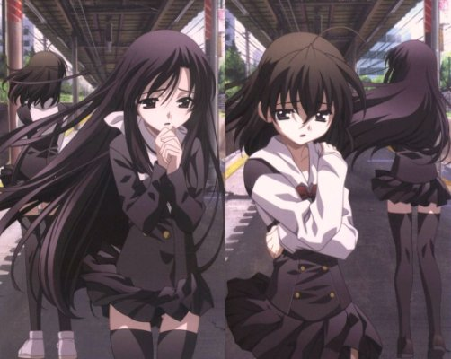

Английское название: School Day
Русское название: Школьные Дни
Число серий: ТВ (12 эп.), 25 мин.
Жанр:Романтика, драма, школа
Создатели:Мотонага Кэйтаро, Уэдзу Макото
Оценка:8/10
Год выпуска: 2007

Описание аниме: Макото Ито - простой японский школьник, привыкший плыть по течению. Чувствуя себя ничем не выдающимся парнем, он даже не может заговорить с симпатичной Котонохой, с которой часто встречается в утреннем поезде. Так бы все и кончилось, если бы не бойкая одноклассница Сэкай Сайондзи, что, увидев страдания соседа, по доброте душевной решила помочь ему устроить сердечные дела. Вот только не слишком ли далеко заходит эта помощь? И почему к Ито начинает проявлять нездоровый интерес чуть ли не половина старшеклассниц? Что, наконец, думает и как действует сам главный герой?
Назад